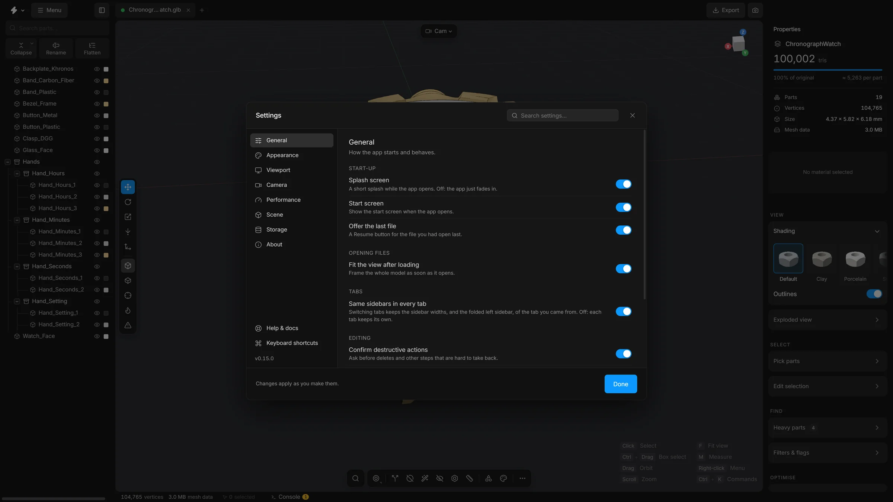
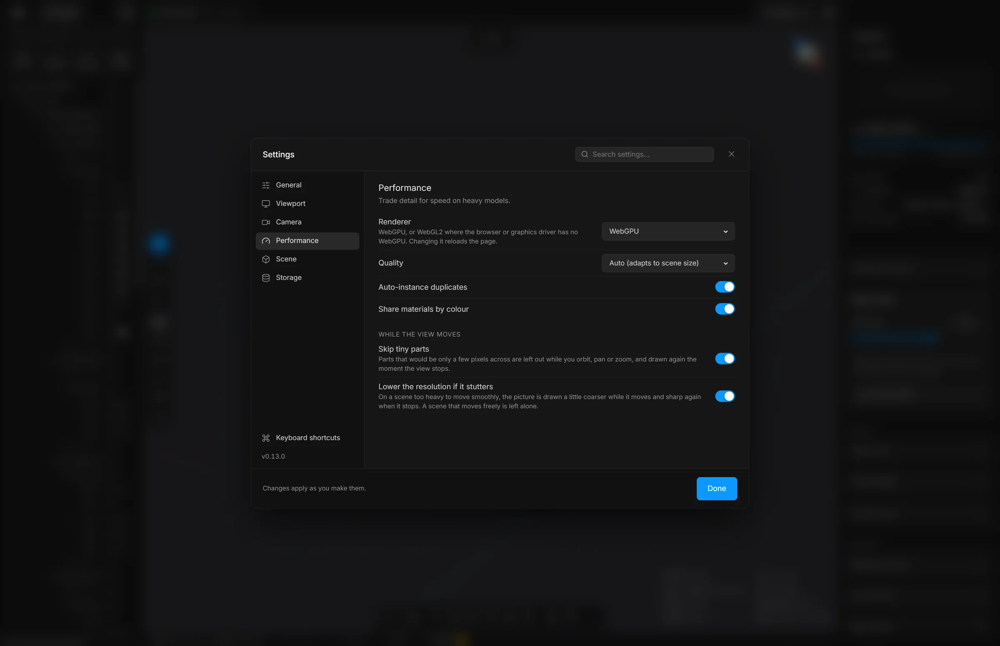

Settings
One window with eight sections and a search. What each section holds, in a sentence or two, from the start-up options to the look of the interface.
Open it with Ctrl, or Menu, then Settings…. Changes apply as you make them. There is nothing to confirm: press Done or Esc to close the window.
The list at the left has the sections. The field at the top searches every section at once. Press CtrlF to jump to it. While a search is typed, Esc clears it first. At the bottom of the list are links to Help & docs and Keyboard shortcuts, and the version number.


General
How the app starts and behaves.
- Splash screen
- The short splash with the version while the app opens. Off: the app just fades in.
- Start screen
- Show the start screen when the app opens.
- Offer the last file
- A Resume button on the start screen for the file you had open last.
- Fit the view after loading
- Move the camera so a newly opened model fills the view.
- Same sidebars in every tab
- Keep the sidebar widths when you switch tabs.
- Confirm destructive actions
- Ask before deletes and other steps that are hard to take back.
- Warn before leaving with unsaved changes
- Closing or reloading the window asks first when a scene has changes that are not saved. On by default.
- Undo history
- How many steps CtrlZ can go back: Short (50), Normal (200) or Long (500). A longer history uses more memory. See Undo and redo.
- Delete groups when they become empty
- Remove a group automatically when an action empties it. Off by default.
Appearance
The look of the interface. It does not change the model or the 3D view. Reset at the bottom puts everything in this section back to the defaults.
- Accent
- The colour of buttons, selections and highlights. Choose one of nine colours, or the last swatch to pick any colour.
- Surfaces
- The greys the interface is built from: Graphite, Midnight, Warm or Black.
- Font
- The typeface of the interface: Inter, System, Mono or Serif.
- Text size
- Everything written in the interface, from Small to Larger. Buttons and fields grow with it.
- Corners
- How round the corners of buttons and cards are: Sharp, Default or Round.
- Density
- The height of buttons, fields and dropdowns: Compact, Default or Roomy.
- Interface animations
- Fades, slides and the movement of the splash screen. Off: everything just appears.
Viewport
What the 3D view draws around the model.
- Highlight small parts
- Tints the parts that are under the size threshold of Delete small parts.
- CAD view look
- The look the CAD view (key 6) shades with: Ceramic, Light or Mono. The same choice is in the Shading card on the right.
- Outlines
- A fine dark line on the sharp edges of every part, in every view. On by default. The same switch is in the Shading card.
- Ground grid
- The floor grid. G switches it too.
- Sun direction gizmo
- A handle in the viewport for turning the light.
- FPS counter and Renderer stats
- Small read-outs of how fast the view is drawing.
- Show origin points
- Shows a dot at the origin of each group in the viewport. Off by default.
- Fog
- Fades the grid and distant parts into the background, with start, end and intensity.
- Background
- Dark, Studio gradient, Neutral grey, White, or HDRI environment. An HDRI is a picture of surroundings that lights the model. There are four built-in ones (Studio, Outdoor, Sunset, Overcast), or load your own
.hdror.exrfile.
Camera
Projection, field of view, clip planes, and how the view moves.
- Projection
- Perspective, as a camera sees, or Orthographic, with no perspective.
- Field of view
- How wide the lens is, in perspective.
- Clip planes
- How near and how far the camera sees. Auto fits the scene. Tight is for tiny parts, Wide for large assemblies and Huge for the size of a factory.
- Orbit around the selection
- With something selected, the view turns around it. Off, or with nothing selected: around the centre of the view.
- Zoom toward the cursor
- The wheel zooms toward the pointer instead of the centre of the view.
- Orbit speed and Zoom speed
- How far the view turns for a drag and moves for the wheel: Slow, Normal or Fast.
The mouse moves are explained in Move the view.
Performance


- Renderer
- WebGPU, or WebGL2 where the browser or the graphics driver has no WebGPU. Changing it reloads the page.
- Quality
- Auto adapts to the size of the scene. High always draws at full sharpness. Low draws coarser, for scenes with millions of triangles.
- Auto-instance duplicates
- Draw repeated shapes as one mesh with many positions. It applies the next time a model is loaded.
- Share materials by colour
- Let parts of the same colour share one material. It applies the next time a model is loaded.
- Skip tiny parts
- While the view moves, leave out parts that would be only a few pixels across.
- Lower the resolution if it stutters
- While a heavy scene moves, draw it a little coarser, and sharp again when it stops.
Scene
These belong to the open scene and are saved with it. Ctrl; opens this section directly, and so does Scene settings… in the menu.
- Display units
- The unit used for sizes and distances on screen: millimetres, centimetres, metres, inches, feet, or none.
- Up axis (viewport)
- Which direction is up: Z, as CAD programs have it, or Y, as glTF and some 3D programs have it. It changes how the scene is shown. The exported file follows the choice in the Export window.
- Scene scale (×)
- A multiplier for the whole scene on screen. 0.001 turns millimetres into metres.
- Cell size
- The size of a grid cell. Auto fits the model.
- Snap gizmo to grid
- The move tool jumps from one grid cell to the next.
The light has no settings here. The sun is turned with the Sun direction gizmo in the viewport.
Storage
What the app remembers on this computer, each with a button to clear it:
- Recent files
- The list on the start screen.
- File access
- Permissions that let the app reopen a recent file without asking where it is.
- Import options
- Shows the options window again for the formats where you ticked “Don’t ask again”.
- Panel sizes
- The widths of the sidebars and the heights of the drawers.
- All settings
- Puts every preference back to its default, the look of the interface included.
About
The version, where to find help, and what to send when something goes wrong.
- Details
- The version of the app, the renderer, how many parts and triangles the scene has, the size of your screen and your browser.
- Help & docs, Keyboard shortcuts
- Open the help window and the list of shortcuts. See The help window.
- Copy details
- Copies the details above, with your graphics card and the look you chose, as text. Paste it into a new issue on GitHub so the problem is easier to find.
- Report a problem
- Opens the report page in your browser, with your version and system already filled in.
- Website, Source code
- The downloads and docs, and the code on GitHub. The app is free and open source, under the MIT licence.